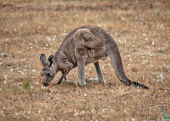
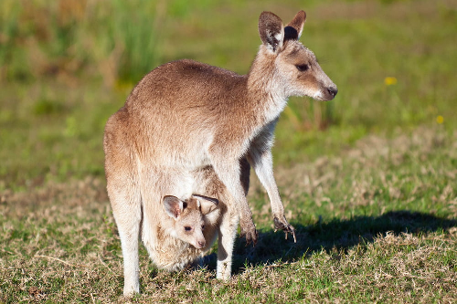

Känguru Info Blatt
Koalas Herkunft Australien
Landschaft
Zwei Fünftel des Landes liegen in den Tropen. Der australische Busch umfasst eine große Vielfalt von Landschaften – vom Regenwald bis hin zu weiten Savannen. Das Zentrum des Kontinents besteht aus einem mit Wüsten und Halbwüsten bedeckten Plateau. Im Kontrast dazu sind viele Küstengebiete sehr fruchtbar; besonders der Landstreifen östlich der Great Dividing Range, die sich vom Norden Queenslands bis zum Süden Victorias hinzieht. Der höchste Berg Australiens ist der Mount Kosciusko (2.230 Meter) in den australischen Alpen.
Vegetation, Pflanzen
Von den rund 20.000 heimischen Pflanzenarten in Australien sind ca. 85 % ausschließlich auf diesem Kontinent zu finden. Typisch für die australische Vegetation sind die Eukalyptus- und Akazienbäume. Von beiden gibt es über 600 Arten.Tierarten
Typische Vertreter der australischen Tierwelt sind die Beuteltiere. Bekannte Vertreter sind die Kängurus mit über 40 Arten, der Koala(Seite1), der Wombat, der Beutelteufel, die Beutelmaus und die Gattung der Kletterbeutler (Possums). Einzigartig auf der ganzen Welt sind Eier legende Säugetiere (Kloakentiere), die nur in Australien und Neuguinea vorkommen.
Koalas Herkunft Australien
Bei den Kängurus gibt es zwei Arten der Fortbewegung:
Wollen sie ein hohes Tempo erreichen, springen Kängurus nur mit den Hinterbeinen, der Schwanz bleibt in der Luft und dient zur Balance. Mit diesem System können die großen Vertreter der Kängurus sogar eine Geschwindigkeit von 88 km/h erreichen. Ist ein Riesenkänguru auf der Flucht, kann die Sprungweite gut neun Meter betragen. Die durchschnittliche Sprungweite liegt aber bei 1,2 bis 1,9 Meter. Bei einer anderen Sprungart wird der Schwanz als eine Art fünftes Bein benutzt. Das Känguru stützt sich dabei mit den Vorderpfoten und dem Schwanz ab und schwingt die Hinterbeine nach vorne. Sobald diese wieder den Boden berühren, werden Vorderpfoten und Schwanz wieder nachgesetzt. 
Daher hat das Känguru seinen Namen
Die größten heute lebenden Beuteltiere sind Kängurus. Der Name der Tiere entstand durch ein Missverständnis: Als James Cook mit seiner Mannschaft im Jahre 1770 mit dem Schiff "Endeavour" an der australischen Nordostküste strandete, wunderte er sich über die eigenartigen Tiere, die sich mit großen Sprüngen fortbewegten. Als sie die Eingeborenen fragten, was dies für Tiere seien, erhielten sie als Antwort: "Kangaroo". Erst sehr viel später stellte sich heraus, dass "Kangaroo" bei den Aborigines nichts anderes bedeutet, als "Ich verstehe dich nicht". Känguru Quiz
Question 1
Question 2
Question 3
Regler zum einstellen der geschwindigkeit